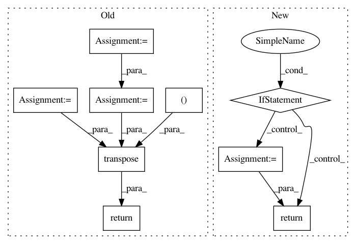

ee8ff00a2a8a307c952fb8e7bef241188c7fb12b,keras/backend/tensorflow_backend.py,,pool2d,#Any#Any#Any#Any#Any#Any#,1048
Before Change
pool_mode: one of "max", "avg".
"""
if border_mode == "same":
padding = "SAME"
elif border_mode == "valid":
padding = "VALID"
else:
raise Exception("Invalid border mode: " + str(border_mode))
strides = (1,) + strides + (1,)
pool_size = (1,) + pool_size + (1,)
if _FLOATX == "float64":
// tf max_pool only supports float32
x = tf.cast(x, "float32")
if dim_ordering in {"tf", "th"}:
if dim_ordering == "th":
// TF uses the last dimension as channel dimension,
// instead of the 2nd one.
// TH input shape: (samples, input_depth, rows, cols)
// TF input shape: (samples, rows, cols, input_depth)
// TH kernel shape: (depth, input_depth, rows, cols)
// TF kernel shape: (rows, cols, input_depth, depth)
x = tf.transpose(x, (0, 2, 3, 1))
if pool_mode == "max":
x = tf.nn.max_pool(x, pool_size, strides, padding=padding)
elif pool_mode == "avg":
x = tf.nn.avg_pool(x, pool_size, strides, padding=padding)
else:
raise Exception("Invalid pooling mode: " + str(pool_mode))
if dim_ordering == "th":
x = tf.transpose(x, (0, 3, 1, 2))
else:
raise Exception("Unknown dim_ordering: " + str(dim_ordering))
if _FLOATX == "float64":
x = tf.cast(x, "float64")
return x
// RANDOMNESS
After Change
dim_ordering: one of "th", "tf".
pool_mode: one of "max", "avg".
"""
if dim_ordering not in {"th", "tf"}:
raise Exception("Unknown dim_ordering " + str(dim_ordering))
padding = _preprocess_border_mode(border_mode)
strides = (1,) + strides + (1,)
pool_size = (1,) + pool_size + (1,)
x = _preprocess_conv2d_input(x, dim_ordering)
if pool_mode == "max":
x = tf.nn.max_pool(x, pool_size, strides, padding=padding)
elif pool_mode == "avg":
x = tf.nn.avg_pool(x, pool_size, strides, padding=padding)
else:
raise Exception("Invalid pooling mode: " + str(pool_mode))
return _postprocess_conv2d_output(x, dim_ordering)
def pool3d(x, pool_size, strides=(1, 1, 1), border_mode="valid",
dim_ordering=_IMAGE_DIM_ORDERING, pool_mode="max"):
In pattern: SUPERPATTERN
Frequency: 3
Non-data size: 9
Instances
Project Name: keras-team/keras
Commit Name: ee8ff00a2a8a307c952fb8e7bef241188c7fb12b
Time: 2016-07-03
Author: francois.chollet@gmail.com
File Name: keras/backend/tensorflow_backend.py
Class Name:
Method Name: pool2d
Project Name: GPflow/GPflow
Commit Name: bb099e4c5b48329b842dbf9884f086f7b514bc0a
Time: 2020-03-16
Author: dutordoirv@gmail.com
File Name: gpflow/models/model.py
Class Name: GPModel
Method Name: predict_f_samples
Project Name: GPflow/GPflow
Commit Name: bd1e9c04b48dd5ccca9619d5eaa2595a358bdb08
Time: 2020-01-31
Author: st--@users.noreply.github.com
File Name: gpflow/kernels/misc.py
Class Name: Coregion
Method Name: K